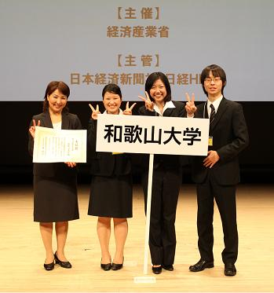
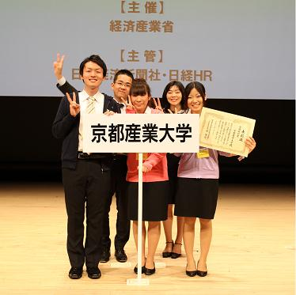

| ●概要 |
経済産業省主催「社会人基礎力育成グランプリ2011」の決勝大会が2011年3月9日、東京・大手町の日経ホールで開催されました。各地で行われた予選大会には合わせて100大学が参加しましたが、その頂点となる今年度の社会人基礎力大賞を受賞したのは、関東地区代表の多摩大学でした。
近畿地区代表2校は惜しくも大賞を逃しましたが、準大賞に和歌山大学が、来場者の審査で選ばれる会場特別賞には京都産業大学が選ばれ、優秀な成績をおさめました。
|
| |
| ●決勝大会の結果 |
「社会人基礎力育成グランプリ2011」決勝大会
日時：2011年3月9日（水）
場所：日経ホール（東京・大手町）
◆社会人基礎力大賞
多摩大学（東京都）
「村山貞幸ゼミ 日本大好きプロジェクト」
◆社会人基礎力準大賞
和歌山大学（和歌山県） ・・・近畿地区代表
「和歌山らしいホスピタリティを発信する！産学連携「おもてなしブック」作成を通した社会人基礎力の育成」
中京大学（愛知県）
「産学連携経営改善プロジェクトを通じた社会人基礎力の向上」
◆会場特別賞
京都産業大学（京都府） ・・・近畿地区代表
「ITを活用した京都学生発！新しい外国人向け観光サービスの創出
〜個性的な14人が創り出した笑顔の輪SmileLink（スマイリンク）〜」
◆参加大学
【北海道・東北地区】山形大学
【関東地区】神奈川工科大学、多摩大学
【中部地区】中京大学
【近畿地区】京都産業大学、和歌山大学
【中国・四国地区】広島経済大学 【九州・沖縄地区】日本文理大学
◆近畿地区代表２校
 
＜参考＞「社会人基礎力」について
経済産業省では、「新しい価値創出に向けた課題の発見」、「解決に向けた実行力」、「異文化と融合するチームワーク」といった社会人として仕事をする上で必要な基礎的能力を「社会人基礎力」と定義し、その育成や普及に取り組んでいます。
その一環として、「社会人基礎力育成グランプリ」を開催しています。グランプリでは、ゼミ・研究等大学における取り組みと成長の様子について学生チームが発表し、もっとも高い「社会人基礎力」の成長が見られたチームを「社会人基礎力大賞」として表彰しています。 |
| |
| ●大会全般に関するお問い合わせ先 |
社会人基礎力育成グランプリ事務局 （株式会社 日経HR）
<TEL> 03-6812-7310
（営業時間：平日10：00〜18：00）
【社会人基礎力.net】 https://www.kisoryoku.net/index.html |
|